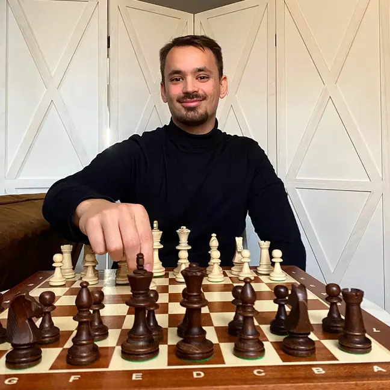

Vous habitez Le Chesnay-Rocquencourt et vous cherchez un professeur d'échecs particulier pour votre enfant ou pour vous-même ? Vous êtes au bon endroit.
Je suis Nicolas Musicki, professeur d'échecs. J'interviens déjà régulièrement à Versailles, que votre commune touche directement : Le Chesnay-Rocquencourt fait donc pleinement partie de ma zone, du quartier de Parly 2 au centre du Chesnay et jusqu'à Rocquencourt. Les cours ont lieu chez vous, sur un vrai échiquier que j'apporte, et le premier cours est offert.
1. Le Chesnay-Rocquencourt : les quartiers desservis
Je me déplace dans toute la commune : le centre du Chesnay et ses rues résidentielles, le quartier de Parly 2, et Rocquencourt. La commune jouxte Versailles, où je donne déjà des cours chaque semaine : le trajet est court et les créneaux faciles à trouver, y compris en fin de journée après l'école.
J'interviens aussi dans les communes voisines, selon le temps de trajet réel : Versailles, Viroflay, Vélizy-Villacoublay et au-delà. La zone complète est détaillée ici. Et si vous préférez la distance, les cours en visioconférence fonctionnent partout.
2. Pour qui sont ces cours ?
Pour les enfants dès 5 ans : les premières séances sont ludiques, on apprend le déplacement des pièces par le jeu, sans théorie ni notation. Les échecs développent la concentration, la patience et la confiance, et beaucoup d'enfants du Chesnay les découvrent à l'école ou au centre de loisirs avant de vouloir progresser pour de bon.
Pour les adolescents qui veulent passer un cap : jouer en tournoi scolaire, progresser en ligne, structurer ce qu'ils ont appris seuls.
Pour les adultes, débutants complets ou joueurs qui reprennent : un programme sur mesure, du niveau zéro jusqu'à la compétition de club. Les seniors et retraités sont particulièrement bienvenus, avec un rythme adapté.
3. Comment se déroulent les cours ?
Une heure en tête-à-tête, chez vous, avec le matériel fourni. Chaque séance combine une notion expliquée sur l'échiquier, des exercices pour l'appliquer tout de suite, et du jeu commenté. Entre les cours, je laisse des exercices adaptés au niveau, jamais une montagne de devoirs.
La régularité qui marche le mieux : un cours par semaine, au même créneau. Pour les enfants, le créneau d'après l'école ou du mercredi est le plus demandé au Chesnay, pensez à réserver tôt dans l'année.
4. Tarifs
- Cours à domicile au Chesnay-Rocquencourt : 50 € de l'heure, déplacement compris ;
- Cours en visioconférence : 40 € de l'heure ;
- Premier cours offert, sans engagement.
Paiement à l'unité, par virement, chèque ou espèces. Pas d'abonnement : vous ne payez que les cours pris. Un cours peut aussi s'offrir.
5. Questions fréquentes
Donnez-vous des cours partout au Chesnay-Rocquencourt ?
Oui : le centre du Chesnay, le quartier de Parly 2, Rocquencourt et les rues limitrophes de Versailles. La commune touche Versailles, où j'interviens déjà régulièrement, donc le déplacement ne pose aucun problème.
Combien coûte un cours d'échecs au Chesnay ?
50 € de l'heure à domicile, déplacement compris, et 40 € de l'heure en visioconférence. Le premier cours est offert et sans engagement, avec paiement à l'unité.
À partir de quel âge un enfant peut-il commencer ?
Dès 5 ans pour la plupart des enfants. Les premières séances sont ludiques : on apprend le déplacement des pièces par le jeu, sans notation ni théorie.
Réservez votre premier cours offert au Chesnay
Indiquez votre quartier et le créneau souhaité dans le formulaire : je vous confirme rapidement.
Réserver mon cours offert